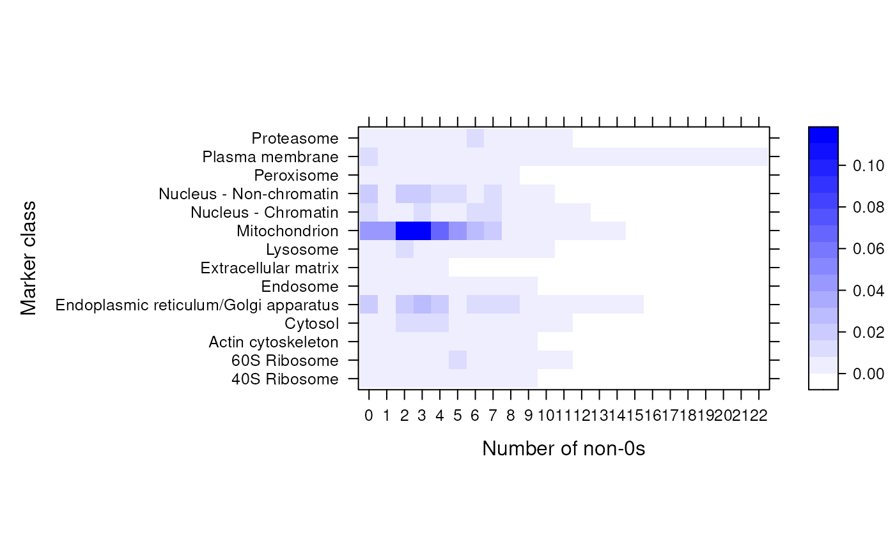

The function assumes that its input is a binary MSnSet and
computes, for each marker class, the number of non-zero expression
profiles. The function is meant to be used to produce heatmaps
(see the example) and visualise binary (such as GO) MSnSet
objects and assess their utility: all zero features/classes will
not be informative at all (and can be filtered out with
filterBinMSnSet) while features/classes with many
annotations (GO terms) are likely not be be informative either.
Arguments
- object
An instance of class
MSnSetwith binary data.- fcol
A
characterdefining the feature data variable to be used as markers. Default is"markers".- as.matrix
If
TRUE(default) the data is formatted and returned as amatrix. Otherwise, alistis returned.- percent
If
TRUE, percentages are returned. Otherwise, absolute values.
Examples
library(pRolocdata)
data(hyperLOPIT2015goCC)
zerosInBinMSnSet(hyperLOPIT2015goCC)
#> 40S Ribosome 60S Ribosome Actin cytoskeleton Cytosol
#> 0 0.005089059 0.005089059 0.001272265 0.005089059
#> 1 0.002544529 0.001272265 0.001272265 0.002544529
#> 2 0.005089059 0.005089059 0.001272265 0.011450382
#> 3 0.002544529 0.007633588 0.001272265 0.008905852
#> 4 0.007633588 0.006361323 0.001272265 0.010178117
#> 5 0.005089059 0.008905852 0.003816794 0.003816794
#> 6 0.001272265 0.002544529 0.001272265 0.002544529
#> 7 0.002544529 0.006361323 0.001272265 0.005089059
#> 8 0.001272265 0.005089059 0.002544529 0.001272265
#> 9 0.001272265 0.003816794 0.001272265 0.001272265
#> 10 0.000000000 0.001272265 0.000000000 0.001272265
#> 11 0.000000000 0.001272265 0.000000000 0.001272265
#> 12 0.000000000 0.000000000 0.000000000 0.000000000
#> 13 0.000000000 0.000000000 0.000000000 0.000000000
#> 14 0.000000000 0.000000000 0.000000000 0.000000000
#> 15 0.000000000 0.000000000 0.000000000 0.000000000
#> 16 0.000000000 0.000000000 0.000000000 0.000000000
#> 17 0.000000000 0.000000000 0.000000000 0.000000000
#> 18 0.000000000 0.000000000 0.000000000 0.000000000
#> 19 0.000000000 0.000000000 0.000000000 0.000000000
#> 20 0.000000000 0.000000000 0.000000000 0.000000000
#> 21 0.000000000 0.000000000 0.000000000 0.000000000
#> 22 0.000000000 0.000000000 0.000000000 0.000000000
#> Endoplasmic reticulum/Golgi apparatus Endosome Extracellular matrix
#> 0 0.016539440 0.001272265 0.003816794
#> 1 0.005089059 0.001272265 0.005089059
#> 2 0.017811705 0.001272265 0.002544529
#> 3 0.024173028 0.003816794 0.002544529
#> 4 0.020356234 0.001272265 0.002544529
#> 5 0.005089059 0.002544529 0.000000000
#> 6 0.013994911 0.001272265 0.000000000
#> 7 0.008905852 0.001272265 0.000000000
#> 8 0.011450382 0.001272265 0.000000000
#> 9 0.003816794 0.001272265 0.000000000
#> 10 0.001272265 0.000000000 0.000000000
#> 11 0.001272265 0.000000000 0.000000000
#> 12 0.001272265 0.000000000 0.000000000
#> 13 0.001272265 0.000000000 0.000000000
#> 14 0.002544529 0.000000000 0.000000000
#> 15 0.001272265 0.000000000 0.000000000
#> 16 0.000000000 0.000000000 0.000000000
#> 17 0.000000000 0.000000000 0.000000000
#> 18 0.000000000 0.000000000 0.000000000
#> 19 0.000000000 0.000000000 0.000000000
#> 20 0.000000000 0.000000000 0.000000000
#> 21 0.000000000 0.000000000 0.000000000
#> 22 0.000000000 0.000000000 0.000000000
#> Lysosome Mitochondrion Nucleus - Chromatin Nucleus - Non-chromatin
#> 0 0.001272265 0.043256997 0.013994911 0.016539440
#> 1 0.005089059 0.043256997 0.003816794 0.003816794
#> 2 0.012722646 0.110687023 0.002544529 0.021628499
#> 3 0.007633588 0.110687023 0.010178117 0.017811705
#> 4 0.002544529 0.068702290 0.006361323 0.015267176
#> 5 0.003816794 0.043256997 0.005089059 0.008905852
#> 6 0.003816794 0.025445293 0.008905852 0.006361323
#> 7 0.001272265 0.019083969 0.011450382 0.011450382
#> 8 0.001272265 0.007633588 0.007633588 0.002544529
#> 9 0.001272265 0.007633588 0.006361323 0.002544529
#> 10 0.001272265 0.001272265 0.001272265 0.001272265
#> 11 0.000000000 0.001272265 0.001272265 0.000000000
#> 12 0.000000000 0.002544529 0.002544529 0.000000000
#> 13 0.000000000 0.001272265 0.000000000 0.000000000
#> 14 0.000000000 0.001272265 0.000000000 0.000000000
#> 15 0.000000000 0.000000000 0.000000000 0.000000000
#> 16 0.000000000 0.000000000 0.000000000 0.000000000
#> 17 0.000000000 0.000000000 0.000000000 0.000000000
#> 18 0.000000000 0.000000000 0.000000000 0.000000000
#> 19 0.000000000 0.000000000 0.000000000 0.000000000
#> 20 0.000000000 0.000000000 0.000000000 0.000000000
#> 21 0.000000000 0.000000000 0.000000000 0.000000000
#> 22 0.000000000 0.000000000 0.000000000 0.000000000
#> Peroxisome Plasma membrane Proteasome
#> 0 0.003816794 0.012722646 0.001272265
#> 1 0.002544529 0.001272265 0.001272265
#> 2 0.003816794 0.002544529 0.001272265
#> 3 0.001272265 0.003816794 0.002544529
#> 4 0.003816794 0.003816794 0.002544529
#> 5 0.002544529 0.001272265 0.006361323
#> 6 0.001272265 0.005089059 0.008905852
#> 7 0.001272265 0.003816794 0.007633588
#> 8 0.001272265 0.002544529 0.005089059
#> 9 0.000000000 0.003816794 0.003816794
#> 10 0.000000000 0.001272265 0.001272265
#> 11 0.000000000 0.003816794 0.001272265
#> 12 0.000000000 0.001272265 0.000000000
#> 13 0.000000000 0.001272265 0.000000000
#> 14 0.000000000 0.001272265 0.000000000
#> 15 0.000000000 0.002544529 0.000000000
#> 16 0.000000000 0.001272265 0.000000000
#> 17 0.000000000 0.002544529 0.000000000
#> 18 0.000000000 0.003816794 0.000000000
#> 19 0.000000000 0.001272265 0.000000000
#> 20 0.000000000 0.001272265 0.000000000
#> 21 0.000000000 0.001272265 0.000000000
#> 22 0.000000000 0.001272265 0.000000000
zerosInBinMSnSet(hyperLOPIT2015goCC, percent = FALSE)
#> 40S Ribosome 60S Ribosome Actin cytoskeleton Cytosol
#> 0 4 4 1 4
#> 1 2 1 1 2
#> 2 4 4 1 9
#> 3 2 6 1 7
#> 4 6 5 1 8
#> 5 4 7 3 3
#> 6 1 2 1 2
#> 7 2 5 1 4
#> 8 1 4 2 1
#> 9 1 3 1 1
#> 10 0 1 0 1
#> 11 0 1 0 1
#> 12 0 0 0 0
#> 13 0 0 0 0
#> 14 0 0 0 0
#> 15 0 0 0 0
#> 16 0 0 0 0
#> 17 0 0 0 0
#> 18 0 0 0 0
#> 19 0 0 0 0
#> 20 0 0 0 0
#> 21 0 0 0 0
#> 22 0 0 0 0
#> Endoplasmic reticulum/Golgi apparatus Endosome Extracellular matrix Lysosome
#> 0 13 1 3 1
#> 1 4 1 4 4
#> 2 14 1 2 10
#> 3 19 3 2 6
#> 4 16 1 2 2
#> 5 4 2 0 3
#> 6 11 1 0 3
#> 7 7 1 0 1
#> 8 9 1 0 1
#> 9 3 1 0 1
#> 10 1 0 0 1
#> 11 1 0 0 0
#> 12 1 0 0 0
#> 13 1 0 0 0
#> 14 2 0 0 0
#> 15 1 0 0 0
#> 16 0 0 0 0
#> 17 0 0 0 0
#> 18 0 0 0 0
#> 19 0 0 0 0
#> 20 0 0 0 0
#> 21 0 0 0 0
#> 22 0 0 0 0
#> Mitochondrion Nucleus - Chromatin Nucleus - Non-chromatin Peroxisome
#> 0 34 11 13 3
#> 1 34 3 3 2
#> 2 87 2 17 3
#> 3 87 8 14 1
#> 4 54 5 12 3
#> 5 34 4 7 2
#> 6 20 7 5 1
#> 7 15 9 9 1
#> 8 6 6 2 1
#> 9 6 5 2 0
#> 10 1 1 1 0
#> 11 1 1 0 0
#> 12 2 2 0 0
#> 13 1 0 0 0
#> 14 1 0 0 0
#> 15 0 0 0 0
#> 16 0 0 0 0
#> 17 0 0 0 0
#> 18 0 0 0 0
#> 19 0 0 0 0
#> 20 0 0 0 0
#> 21 0 0 0 0
#> 22 0 0 0 0
#> Plasma membrane Proteasome
#> 0 10 1
#> 1 1 1
#> 2 2 1
#> 3 3 2
#> 4 3 2
#> 5 1 5
#> 6 4 7
#> 7 3 6
#> 8 2 4
#> 9 3 3
#> 10 1 1
#> 11 3 1
#> 12 1 0
#> 13 1 0
#> 14 1 0
#> 15 2 0
#> 16 1 0
#> 17 2 0
#> 18 3 0
#> 19 1 0
#> 20 1 0
#> 21 1 0
#> 22 1 0
pal <- colorRampPalette(c("white", "blue"))
library(lattice)
levelplot(zerosInBinMSnSet(hyperLOPIT2015goCC),
xlab = "Number of non-0s",
ylab = "Marker class",
col.regions = pal(140))
